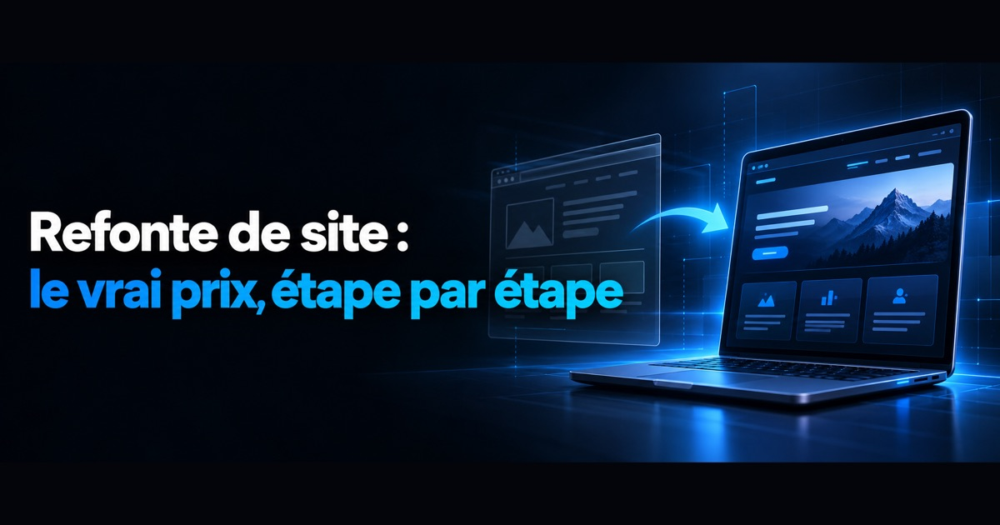

Publié le 28 septembre 2026.
La réponse courte : le prix dépend de ce que vous refaites, pas du mot « refonte »
Une refonte légère (nouveau design, même outil, mêmes pages) se chiffre en centaines ou en quelques milliers d'euros ; une refonte complète (nouvelle structure, nouvel outil, contenus réécrits, migration des adresses) se chiffre en milliers, voire en dizaines de milliers pour un site e-commerce. Le mot « refonte » recouvre des chantiers sans commune mesure, et c'est pour cela que les prix annoncés en ligne semblent incohérents.
Nous avons relevé les tarifs affichés par les dix premiers résultats de Google sur la requête « refonte site internet prix » (relevé du 14 septembre 2026). Quelques exemples, tels que les prestataires les annoncent :
- une refonte « simple » de site WordPress entre 500 et 1 500 € ;
- une refonte légère dès 750 € et une refonte complète entre 1 500 et 2 500 € ;
- une refonte légère (design et contenu, même outil) entre 1 500 et 4 000 € ;
- un forfait agence dès 4 500 € pour une refonte simple, et des tarifs indépendants moyens de 350 à 500 € la journée ;
- des fourchettes d'agence allant de 5 000 à plus de 35 000 €.
Ces montants ne sont pas des moyennes de marché : ce sont des prix d'appel, chacun calculé sur un périmètre différent. Ils disent surtout une chose — avant de comparer des prix, il faut savoir quel niveau de refonte vous achetez.
Quand faut-il faire une refonte, et quand une correction suffit
Une refonte se justifie quand le problème est dans la structure du site ; quand il est dans une page, une image ou un réglage, une correction suffit et coûte beaucoup moins cher. La question à poser n'est pas « mon site est-il vieux ? » mais « ce qui ne marche pas peut-il se réparer sans tout reconstruire ? ».
- Une correction suffit si le site est lent à cause d'images trop lourdes, s'il manque une page de prestation, si les coordonnées ou les horaires sont faux, ou si les données structurées sont absentes : ce sont des interventions ciblées ;
- Une refonte se justifie si le site n'est pas utilisable sur téléphone, s'il repose sur un outil qui empêche de modifier la structure des pages, si l'organisation des pages ne correspond plus à vos prestations, ou si chaque modification exige de passer par un prestataire que vous ne pouvez plus joindre ;
- Une création neuve vaut mieux si le site est récent, sans trafic et sans historique de référencement : il n'y a alors rien à préserver, et une refonte n'est qu'une création déguisée.
Les signes qui montrent qu'un site ne rapporte plus — visibilité en baisse, lenteur mobile, design qui fait fuir, parcours qui ne convertit pas — sont détaillés dans notre article pourquoi refaire son site internet : les quatre signes. Ici, nous partons du principe que la décision est prise, et nous regardons comment la mener.
Les trois niveaux de refonte, et ce qu'ils changent au prix
On distingue la refonte graphique, la refonte technique et la refonte complète. Plus on descend dans la liste, plus le chantier touche aux adresses des pages — et plus le risque pour le référencement, donc le travail de migration, augmente.
- Refonte graphique. Nouveau design sur le même outil, avec les mêmes pages et les mêmes adresses. C'est la moins coûteuse et la moins risquée : si aucune adresse ne change, il n'y a rien à rediriger ;
- Refonte technique. Changement d'outil (passer d'un créateur de site en ligne à un CMS, ou l'inverse), de structure HTML ou d'hébergement. Le visiteur voit peu de différence, mais les adresses changent souvent — c'est là que les sites perdent leur trafic ;
- Refonte complète. Nouvelle arborescence, contenus réécrits, nouveau design et souvent nouvel outil. C'est le chantier le plus cher, et celui où la préparation (inventaire, plan de redirections) pèse le plus lourd dans le devis.
Les étapes d'une refonte, dans l'ordre
Une refonte réussie se prépare avant de toucher au design : on inventorie ce que l'ancien site a gagné, on construit le nouveau à côté, on redirige chaque ancienne adresse, puis on surveille. L'ordre compte — la plupart des pertes de trafic viennent d'étapes faites dans le désordre ou sautées.
- Mesurer l'existant. Relevez les pages qui reçoivent du trafic, les requêtes sur lesquelles elles apparaissent (Search Console), les pages qui génèrent des contacts et les sites qui font des liens vers vous. C'est la liste de ce qu'il ne faut pas perdre ;
- Fixer l'objectif. Plus de demandes de devis, une zone mieux couverte, des prestations mieux présentées, un site que vous pouvez modifier vous-même : un objectif mesurable permet de juger la refonte après coup ;
- Construire la nouvelle arborescence. Une page par prestation, une page par zone si c'est pertinent, et des adresses courtes et stables. Chaque ancienne page doit avoir une destination dans le nouveau plan ;
- Établir la table de correspondance des adresses. Google recommande d'élaborer un mappage entre les URL actuelles et les nouvelles avant la migration. Une ancienne adresse sans destination, c'est une page qui renvoie une erreur et un classement abandonné ;
- Produire les contenus et construire le site hors ligne. Le nouveau site se construit sur un espace de préproduction, pas à la place de l'ancien : les visiteurs ne doivent jamais tomber sur un chantier ;
- Basculer avec des redirections permanentes. Google recommande des redirections permanentes côté serveur (codes 301 ou 308) des anciennes adresses vers les nouvelles, et de les conserver « aussi longtemps que possible, généralement au moins un an » ;
- Surveiller après la mise en ligne. D'après la même documentation Google, pour un site de taille moyenne, il peut s'écouler quelques semaines ou plus avant que les nouvelles adresses remplacent les anciennes dans les résultats, et une fluctuation du classement pendant cette période est normale. Surveillez les erreurs et les pages non indexées dans la Search Console plutôt que de corriger à l'aveugle.
C'est aussi le moment de rendre le site lisible par les moteurs de réponse IA — réponses directes en tête de section, données structurées, pages dédiées par sujet —, ce que nous détaillons dans notre page GEO — visibilité dans les IA. Rattraper ce travail après une refonte oblige à retoucher chaque page une seconde fois.
Ce qui fait varier le prix d'une refonte
Cinq postes expliquent l'essentiel de l'écart entre deux devis de refonte : le nombre d'adresses à migrer, le changement d'outil, la reprise des contenus, les fonctions ajoutées et le suivi après la bascule. Un devis qui ne dit rien de l'un d'eux ne l'a probablement pas prévu.
- Le nombre d'adresses à migrer. Rediriger un site de dix pages est rapide ; un site avec un blog de deux cents articles demande un vrai tri — conserver, fusionner, rediriger ;
- Le changement d'outil. Rester sur le même CMS coûte moins cher que de migrer d'un créateur de site en ligne vers un CMS : les contenus ne s'exportent pas toujours proprement et doivent parfois être ressaisis ;
- La reprise des contenus. Recopier les textes existants, les réécrire ou en produire de nouveaux ne représente pas le même travail. C'est souvent le poste le plus sous-estimé ;
- Les fonctions ajoutées. Prise de rendez-vous, formulaire de devis détaillé, espace client : chaque fonction ajoute du développement et parfois un abonnement ;
- Le suivi après la bascule. Vérifier les redirections, corriger les erreurs signalées par la Search Console, contrôler que les pages clés reviennent dans l'index : un devis qui s'arrête à la mise en ligne vous laisse seul pendant les semaines où tout se joue.
Pour les coûts qui viennent ensuite chaque année — nom de domaine, hébergement, maintenance — les ordres de grandeur publiés par France Num sont repris dans notre guide combien coûte un site internet professionnel en 2026. Ils valent aussi bien pour un site refondu que pour un site neuf.
Le coût qu'aucun devis n'affiche : le trafic perdu
Le coût le plus lourd d'une refonte ratée ne figure sur aucune facture : ce sont les demandes de contact qui n'arrivent plus parce que les anciennes pages ont disparu des résultats. Il se prévient à la préparation, pas après la mise en ligne.
Trois situations reviennent : des adresses modifiées sans redirection, qui renvoient une erreur à Google comme aux visiteurs venus d'un lien ; des pages qui se classaient bien, supprimées parce qu'elles « faisaient désordre » ; et des redirections retirées au bout de quelques mois, alors que Google recommande de les garder au moins un an. Aucune de ces erreurs ne se voit le jour de la livraison — elles se voient dans la Search Console quelques semaines plus tard.
Le même risque existe en local : si votre site change d'adresse, le lien de votre fiche Google Business Profile doit suivre. Nous expliquons comment site et fiche travaillent ensemble dans notre guide SEO local pour une TPE/PME.
Nos tarifs : une refonte de 800 € à 3 000 €, chiffrée après audit
Chez Fiducia IA, une refonte de site coûte de 800 € à 3 000 €, selon le travail à réaliser — d'une refonte ciblée à une refonte complète accompagnée d'un travail de référencement SEO ou GEO. Ces montants sont nets : FIDUCIA CONSEILS relève de la franchise en base de TVA (article 293 B du CGI), il n'y a donc pas de TVA à ajouter.
Chaque site est particulier : son historique, son outil, le nombre de pages à migrer et l'état de ses contenus ne sont jamais les mêmes. Le montant exact est donc chiffré après un audit complet de la situation, dans un devis ferme, poste par poste. Il arrive que cet audit conclue qu'une correction ciblée suffit, ou qu'une création neuve est plus rentable qu'une refonte forcée.
Le détail de notre méthode — inventaire, plan de redirections, contrôle après bascule — est sur notre page refonte de site internet. Le nom de domaine, l'hébergement et les fichiers du site restent à votre nom, et une refonte peut se mener par étapes : les pages qui rapportent d'abord, le reste ensuite.
Questions fréquentes
Combien coûte la refonte d'un site internet ?
Cela dépend du niveau de refonte. Sur la première page de Google, relevée le 14 septembre 2026, les prestataires annoncent de 500 à 1 500 € pour une refonte simple de site WordPress, dès 750 € pour une refonte légère, et de 5 000 à plus de 35 000 € dans les fourchettes d'agence. Ces montants sont des prix d'appel calculés sur des périmètres différents : comparez d'abord ce qui est refait — design seul, changement d'outil ou refonte complète avec migration des adresses. Chez Fiducia IA, une refonte coûte de 800 € à 3 000 € nets selon le travail à réaliser, chiffrée après un audit complet de la situation.
Une refonte fait-elle perdre son référencement ?
Pas si la migration est préparée. Google recommande d'établir une correspondance entre chaque ancienne adresse et la nouvelle, de mettre en place des redirections permanentes côté serveur et de les conserver aussi longtemps que possible, généralement au moins un an. Une fluctuation du classement pendant quelques semaines reste normale selon la documentation de Google.
Combien de temps prend une refonte de site ?
La durée dépend surtout de la reprise des contenus et du nombre de pages à migrer, bien plus que du design. Il faut ensuite compter la période de transition côté Google : pour un site de taille moyenne, il peut s'écouler quelques semaines ou plus avant que les nouvelles adresses remplacent les anciennes dans les résultats.
Refonte ou nouveau site : comment choisir ?
Si votre site a un historique de référencement — pages qui reçoivent du trafic, liens entrants, requêtes sur lesquelles il apparaît — la refonte le préserve. S'il est récent, sans trafic ou bloqué par un outil qui empêche de modifier sa structure, une création neuve est souvent plus simple et moins chère.
Peut-on refaire son site sans changer les adresses des pages ?
Oui, c'est le cas d'une refonte graphique : nouveau design, mêmes pages, mêmes adresses. C'est la refonte la moins risquée pour le référencement, puisqu'il n'y a rien à rediriger. Dès que l'outil ou l'arborescence change, les adresses changent en général aussi, et un plan de redirections devient indispensable.